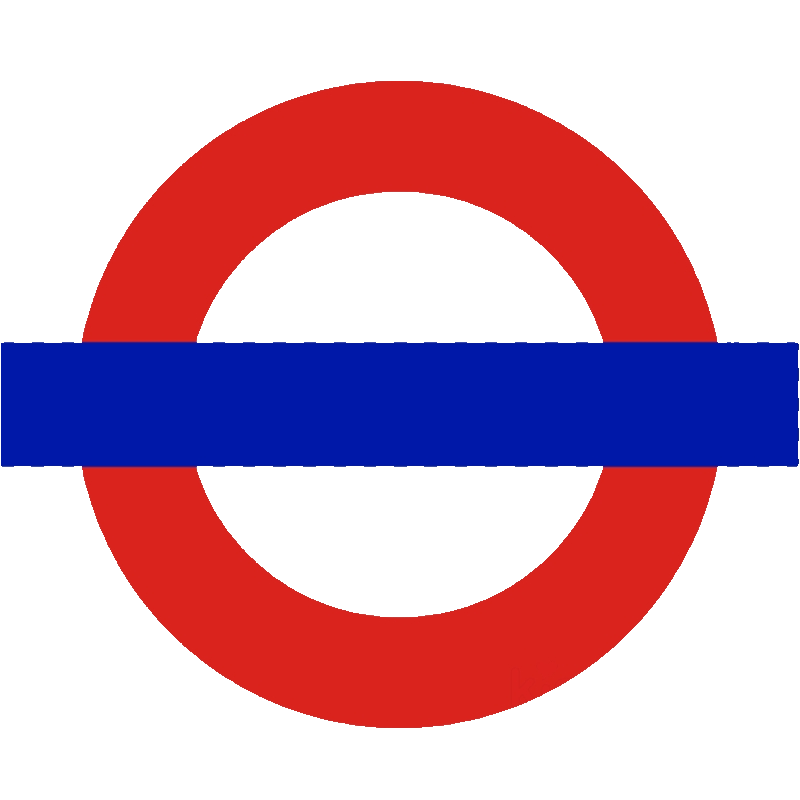

The Alternative Underground
Home
About Us
The Alternative Underground App (version 1) allows you to choose a London Underground line and rename its stations based on a theme of your choosing.
Choose which line you want to choose a new theme for:
Bakerloo
Central
Circle
District
Hammersmith & City
Jubilee
Metropolitan
Northern
Piccadilly
Victoria
Waterloo & City
Choose a theme for your new line:
Generate Station names